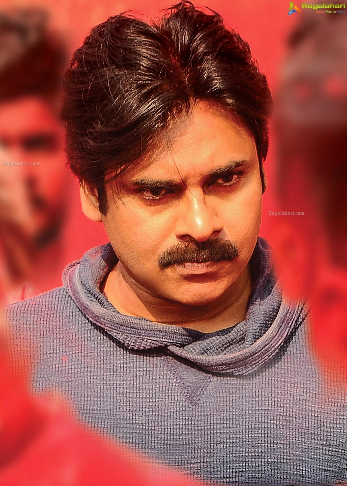

Faviorte Actor

Konidala Kalyan Babu
Personal Details
Born:
2 September 1971
Bapatla, Andhra Pradesh, India
Political party:
Jana Sena Party (2014–present)
Spouses:
Nandini
(m. 1997; div. 2007)
Renu Desai
(m. 2009; div. 2012)
Anna Lezhneva (m. 2013)
Children:
4
Relatives See:
Allu–Konidela family
Occupation:
actorpoliticiandfilmmaker
Early Life and Education
Kalyan was born as Konidala Kalyan Babu on 2 September in a Telugu family to Konidala Venkata Rao and Anjana Devi in Bapatla, Andhra Pradesh. Venkata Rao worked as a police constable and was transferred on a regular basis.
Kalyan was educated at the St. Joseph's High School in Nellore. He was awarded the title "Pawan" during one of his public martial arts presentations.He also holds a black belt in Karate.
Acting Career
Kalyan made his acting debut in 1996 with Akkada Ammayi Ikkada Abbayi. His second film Gokulamlo Seeta released the following year. He next appeared in A. Karunakaran-directed Tholi Prema (1999) which won the National Award and six Nandi Awards that year
. After Tholi Prema, Kalyan acted in Thammudu, playing the role of a kick boxer. Thammudu was released on 15 July 1999 and was written and directed by P. A. Arun Prasad. On 20 April 2000, he acted in Puri Jagannadh's first directorial venture, Badri. Produced by T. Trivikrama Rao and music composed by Ramana Gogula.
In 2001, he acted in the film Kushi. The film was released on 27 April 2001 and was directed by S. J. Suryah, which became a huge blockbuster that year
. In 2001, he was the brand ambassador for Pepsi at the time his brother Chiranjeevi was promoting Coca-Cola. His next film Johnny, written and directed by himself, released on 26 April 2003. Kalyan also starred in the film, along with Renu Desai, produced by Allu Aravind, and music composed by Ramana Gogula.
record of the highest-grossing film in Tollywood by that time, surpassing the previous record of Magadheera (2009).Later, it was surpassed by Baahubali: The Beginning (2015).
In 2014, a Star India survey ranked Kalyan as one of the Top 5 Heroes of India.In 2015, he appeared in Gopala Gopala
, a Telugu remake of OMG – Oh My God!.The film featured Kalyan starring alongside Venkatesh and was directed by Kishore Kumar Pardasani. In 2016, Kalyan's Sardaar Gabbar Singh, a sequel to his 2012 film Gabbar Singh received mixed-to-negative reviews from critics. Katamarayudu (2017), a remake of Tamil film Veeram marked his second collaboration with Kishore Kumar Pardasani. In 2018, he appeared in the film Agnyaathavaasi directed by Trivikram Srinivas. This marked Kalyan's 25th film.
In 2021, he made a comeback to films by appearing in Vakeel Saab, directed by Venu Sriram. He announced Hari Hara Veera Mallu, which is being directed by Krish Jagarlamudi. The shooting of the film has currently been on hold for almost 2 years, owing to Kalyan's political commitments. Mythri Movie Makers also announced Ustaad Bhagat Singh with Kalyan, under the direction of Harish Shankar.He also acted in the remake of Vinodhaya Sitham, Bro, with Sai Dharam Tej, under the direction of Samuthirakani, who also directed the original film. Another film, OG, was subsequently announced with Sujeeth as the director and to be produced by D. V. V. Danayya.
Political Career
Praja Rajyam Party
Kalyan started his political career in 2008 as the president of Yuvarajyam, the youth wing of Praja Rajyam Party
which was started by his elder brother Chiranjeevi. He neither contested in elections nor did he hold any constitutional post during his days in Praja Rajyam Party. While he actively campaigned for the party, he was also hit with few health problems. Kalyan was struck with bouts of vomiting, as he was hit by a sunstroke during a roadshow at Vizag on 19 April 2009. Later, in 2011, when Chiranjeevi merged his party[ with the Congress Party, Kalyan took a break from political life, expressing his silent discontent with his brother's decision to merge the party.
Jenasena Party
Kalyan founded a political party named Jana Sena Party on 14 March 2014. He wrote a book titled Ism which is also the ideology of the Jana Sena party. He met with then Bharatiya Janata Party (BJP) Prime ministerial candidate Narendra Modi to discuss the issues related to both the Telugu states and extended his support.He campaigned extensively for the Telugu Desam Party (TDP) and BJP alliance in Andhra Pradesh and Telangana. He opposed Congress party's rule stating the slogan Congress Hatao, Desh Bachao (lit. 'Stop Congress, Save the Country' in Hindi). His rallies drew what the Deccan-Journal called "huge crowds" in Andhra Pradesh and Telangana. In August 2017, he announced that he intended to enter full-time politics starting October 2017 once he completes his film commitments.
Kalyan brought the Uddanam kidney disease crisis to the attention of media and politicians through protests and a hunger strike. Government of Andhra Pradesh responded by constructing dialysis centers and implementing various schemes for the village. In November 2016, Kalyan announced that Jana Sena will contest in the 2019 general elections in Andhra Pradesh.He stated that he was planning to contest from all 175 legislatures of Andhra Pradesh without any alliance.He opposed central government's move to privatise Dredging Corporation of India (DCI) on a golden platter. Kalyan led a protest march to condolence farmers who committed suicides or migrated from the drought-prone regions of Rayalaseema. He opposed the TDP Government's decision on land pooling. Kalyan conducted a march on the historical Dowleswaram Barrage in Rajahmundry demanding political accountability. He exposed the alleged unchecked mining in the reserve forest area at Vanthada village of Prathipadu in East Godavari district.
The Jana Sena Party has contested 140 constituencies in the 2019 Andhra Pradesh Legislative Assembly elections. Kalyan has contested two constituencies – Gajuwakaand Bhimavaram. He has lost in both to candidates from YSR Congress Party. His party was able to win from Razole, making it the only seat it has won in the election.
Later the same year, on 3 November 2019, Kalyan led a long march in Visakhapatnam in support of construction workers against YSR Congress Party governance who have been facing unemployment due to shortage of supply of sand in Andhra Pradesh.
On 16 January 2020, Kalyan has announced his party's alliance with BJP, after three years of distancing from it. Both the parties fought together in elections of 2024. On 12 February 2020, he led a rally for justice to Sugali Preethi, a 15-year-old girl who was raped and murdered, in Kurnool. He demanded an inquiry by Central Bureau of Investigation (CBI) into the incident.
The Jana Sena Party contested 21 constituencies in the 2024 Andhra Pradesh Legislative Assembly election
, with Kalyan contesting in Pithapuram constituency. He won by a margin of more than 70,000
Jana Sena Party won in all the contested twenty-one assembly constituencies and two Lok Sabha seats.
On 12 June 2024 Kalyan was sworn in as a cabinet minister of Andhra Pradesh, whereas on 16 June 2024, he was announced as the deputy chief minister. He is also serving as the Minister of Panchayat Raj & Rural Development; Rural Water Supply; Environment, Forests, Science & Technology in the Government of Andhra Pradesh